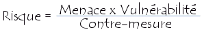

Debido a que el uso de Internet se encuentra en aumento, cada vez más compañías permiten a sus socios y proveedores acceder a sus sistemas de información. Por lo tanto, es fundamental saber qué recursos de la compañía necesitan protección para así controlar el acceso al sistema y los derechos de los usuarios del sistema de información. Los mismos procedimientos se aplican cuando se permite el acceso a la compañía a través de Internet.

Además, debido a la tendencia creciente hacia un estilo de vida nómada de hoy en día, el cual permite a los empleados conectarse a los sistemas de información casi desde cualquier lugar, se pide a los empleados que lleven consigo parte del sistema de información fuera de la infraestructura segura de la compañía.
Introducción a la seguridad
Los riesgos, en términos de seguridad, se caracterizan por lo general mediante la siguiente ecuación:
La amenaza representa el tipo de acción que tiende a ser dañina, mientras que la vulnerabilidad (conocida a veces como falencias (flaws) o brechas (breaches)) representa el grado de exposición a las amenazas en un contexto particular. Finalmente, la contramedida representa todas las acciones que se implementan para prevenir la amenaza.
Las contramedidas que deben implementarse no sólo son soluciones técnicas, sino también reflejan la capacitación y la toma de conciencia por parte del usuario, además de reglas claramente definidas.
Para que un sistema sea seguro, deben identificarse las posibles amenazas y por lo tanto, conocer y prever el curso de acción del enemigo. Por tanto, el objetivo de este informe es brindar una perspectiva general de las posibles motivaciones de los hackers, categorizarlas, y dar una idea de cómo funcionan para conocer la mejor forma de reducir el riesgo de intrusiones.